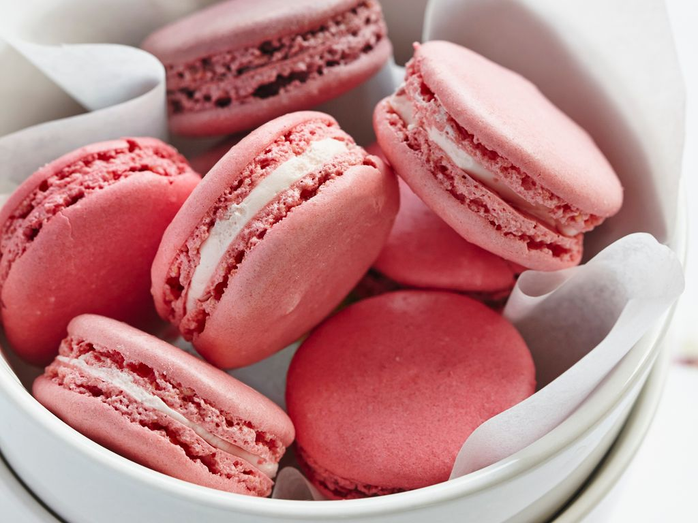

Bienvenue sur mon site de cuisine où je partage mes plats préférés ! :)

Découvrez mes choix culinaires. Au menu : tomate mozzarella, magret de canard et enfin des macarons avec une vidéo tuto !
Bonne visite et bonne dégustation :)